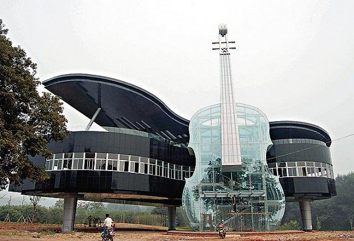
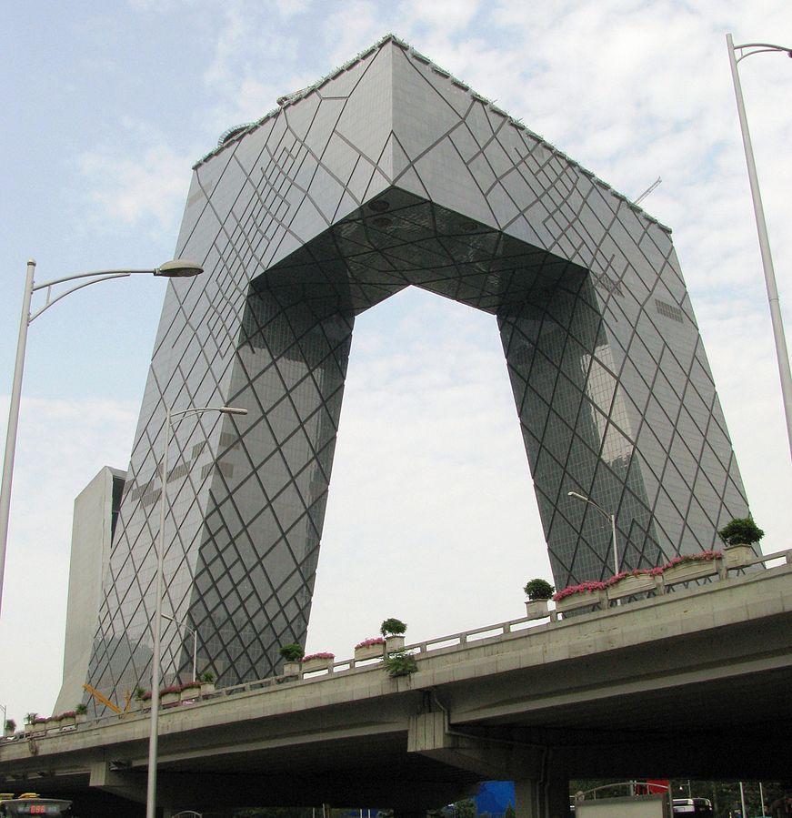
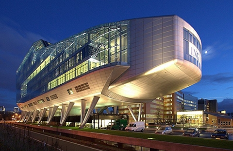

Музична будівля
Цей дивовижний будинок під назвою Piano House побудований в Хуайнань (провінція Аньхой, Китай) за проектом студентів архітектурного факультету Хефейского технологічного університету (Hefey University of Technology), розробленим спільно з дизайнерами компанії Huainan Fangkai Decoration Project Co.
Piano House складається з двох частин, що зображують два інструменти - прозора скрипка, яка спирається на напівпрозоре фортепіано. Унікальна будівля побудована для любителів музики, однак до музики відношення не має. У скрипці розташований ескалатор, а в піаніно - виставковий комплекс, в якому до уваги відвідувачів представлені плани вулиць і районів міста.
Об'єкт створений з подачі місцевих органів влади. Незвичайне будівля прагне привернути увагу жителів Китаю і численних туристів до нового розвивається району, в якому є найбільш знаковим об'єктом. Завдяки суцільному скління фасадів (прозоре і тоноване скло), приміщення комплексу отримують максимально можливу кількість природного освітлення. А в нічний час доби, тіло об'єкта ховається в темряві, залишаючи видимими лише неонові контури силуетів гігантських «інструментів».
Штаб-квартира CCTV
Штаб-квартира CCTV - хмарочос в Пекіні. У будівлі буде розташовуватися штаб Центрального телебачення Китаю. Будівельні роботи розпочалися 22 вересня 2004 року, в 2009 році будівля була завершено. Архітекторами будівлі є Рем Колхас і Оле Шерен (компанія OMA). Будівля має висоту 234 м і складається з 44 поверхів.
Основна будівля побудована в незвичайному стилі і являє собою кільцеподібний структуру з п'яти горизонтальних і вертикальних секцій, що утворять неправильну грати на фасаді будівлі з порожнім центром. Зведення будівлі вважалося непростим завданням, особливо з огляду на його розташування в сейсмонебезпечній зоні. Через свою незвичайну форму будівля вже знайшло прізвисько «штанці».
Друга будівля, Телевізійний культурний центр, буде вміщати готель Mandarin Oriental Hotel Group, центр для відвідувачів, великий суспільний театр і виставкові площі. 9 лютого 2009 року в ще не зданому в експлуатацію будинку готелю сталася сильна пожежа.
Штаб-квартира ING
Будівля банку ING спроектовано так. що жодна з його стін не утворює з сусідньої прямого кута. Архітектори відмовилися від форми коробки, властивої іншим офісним будівлям. Критики порівнюють його з гігантським замком з піску, а шанувальники співвідносять архітектурою стародавніх інків. Основний мотив у його оформленні - течу вода. Шум водоспадів і фонтанів виробляє заспокійливу дію. У дворі будівлі розбиті численні сади.
Будинок з химерами

Будинок з химерами - цегляна будівля в стилі модерн, розташоване в столиці України, Києві. Свою назву будинок отримав завдяки скульптурним прикрасам (розташованим як на фасаді будинку так і всередині його), тематика яких - наземний і підводний тваринний світ, атрибути полювання, казкові істоти.
Будівля розташована в Печерському районі на вулиці Банковій, 10, навпроти Адміністрації Президента України. Архітектор Владислав Городецький побудував його в 1901-1903 роках як прибутковий будинок з приміщеннями для своєї сім'ї. Місце будівництва вибрав над крутим обривом по Банковій вулиці, на колишньому березі осушеного Козячого болота. Скульптурні прикраси за власними ескізами виконав скульптор Еліо Саля.
Будинок використовується як резиденція Президента України з весни 2005 року згідно з постановою уряду. Є об'ктом культурної спадщини, охоронний номер 906.